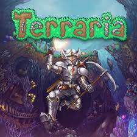

¿Que es terraria?

Terraria es un videojuego de acción, aventura y de sandbox producido de forma independiente por el estudio Re-Logic. Tiene características tales como la exploración, la artesanía, la construcción de estructuras y el combate
Se lanzó el 16 de mayo de 2011. Hasta la fecha lleva más de 45 000 000 de copias vendidas entre sus diversas plataformas
´
Se estima que el juego vendió alrededor de 50 000 copias el día del lanzamiento, con más de 17 000 jugadores en línea al mismo tiempo. En asociación con la productora 505 Games el juego fue lanzado para las plataformas Xbox 360, PlayStation 3 y PlayStation Vita, pero estas se dejaron de actualizar. Sus ventas totales se estiman alrededor de un millón de copias. El juego también fue lanzado para los sistemas Android e iOS alcanzando en estas plataformas 8,9 millones de copias descargadas.
Desarrolo
Terraria empezó su desarrollado por Re-Logic a inicios de enero de 2011. Está construido en el framework de Microsoft XNA. El juego fue lanzado el 16 de mayo de 2011. Re-Logic está compuesto por Andrew Spinks, quien diseñó y programó el juego, y Finn Brice, quien junto con Spinks hizo el diseño gráfico para el juego. La música fue compuesta por Scott Lloyd Shelly a través de su estudio Resonance Array.
En febrero de 2012, los desarrolladores anunciaron que no continuarían con el desarrollo activo, pero lanzarían una actualización final para solucionar problemas. Sin embargo, el desarrollo reanudaría en 2013 con el lanzamiento de la versión 1.2. Adicionalmente, 505 Games ha portado el juego a varias consolas de videojuegos y añadido nuevo contenido, pero no tiene ningún derecho sobre la versión de PC del juego. El 24 de enero de 2013, Spinks solicitó sugerencias de nuevas características para posibles actualizaciones futuras de la versión de PC. Esta pregunta fue puesta a la gente en el foro oficial de Terraria. A partir del 3 de abril de 2013, Spinks publicó un spoiler de la posible actualización para Terraria, mostrando la posibilidad de la actualización. Mientras que inicialmente el lanzamiento estaba programado para julio de 2013, fue luego desplazado al 1 de octubre de 2013. Spike Chunsoft lanzó la versión de PlayStation 3 en Japón, incluyendo artículos exclusivos como un traje basado en Monokuma de Danganronpa: Trigger Happy Havoc.
En una entrevista con Rock, Paper, Shotgun en octubre de 2013, Spinks dijo que estaba trabajando en la progresión final para Terraria, así como una posible actualización de Halloween. También anunció que estaba planeando una secuela.
El 30 de junio de 2015 el juego se actualizo a la 1.3 la cual fue la segunda actualización más grande que se ha hecho en el juego, en la que se agregaban nuevos jefes, eventos, bloques, características, mobs, entre otros.
Finalmente en la convención de juegos E3 (Electronic Entertainment Expo) del 2019 se mostró un tráiler de lo que sería la última actualización que tendrá el juego, la 1.4, agregando nuevos jefes, modos, biomas, entre otros5. Esta actualización se incorporó al juego el 16 de mayo de 2020. El 28 de septiembre de 2022 se actualizo a la 1.4.4 "Labor of Love" u "Obra de Amor" dónde se solucionó varios problemas de que la princesa no podía aparecer en cualquier mundo.Se añadió un nuevo mini bioma que se llama Éter o Aether dónde se encuentra en el centro un líquido llamado "Fulgor o shimmer" además podrá transformar algunos objetos a otro pero también puede descraftear algunos.Además se añadió una nueva semilla secreta que se llama "get fixed boi" donde el mundo sería todo Mal y habrá un jefe nuevo que se llama "Mechdusa" dónde los 3 jefes mecánicos se fusionaron para ser más fuerte.El mundo comenzará con los NPC's del modo difícil y normal La princesa,La chica fiestera,La steampunker y El recaudador de impuestos pero cuando amanece un nuevo día,los NPC moriran.
volver al inicio